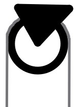
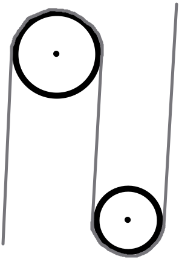

Jednoduché stroje
Páka

- slouží ke změně sil
- použití - otvíráky, kleště, nůžky...
*obrázek - Potřebuji využít?
Kladka
- kruh s drážkou po obvodu
- dělí se na
- pevná - je připevněná
- volná - volně visí na laně, připevněná tak, aby nevypadla
Kladkostroj
- vzniká spojením 2 a více kladek
- využití - jeřáb
- umožní zvedat tělesa s menší silou, 1 kladka = polovina síly, 3 kladky = třetina síly, 4 kladky = čtvrtina síly (musím vyvinout)